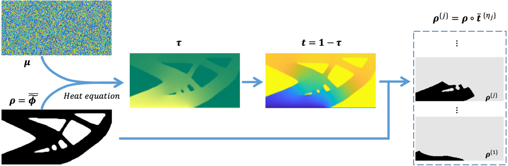

Regularization in space–time topology optimization for additive manufacturing
Computer Methods in Applied Mechanics and Engineering, 2024
| Weiming Wang | Kai Wu | Fred van Keulen | Jun Wu |
| TU Delft | TU Delft | TU Delft | TU Delft |

Abstract
In additive manufacturing, the fabrication sequence has a large influence on the quality of manufactured components. While planning of the fabrication sequence is typically performed after the component has been designed, recent developments have demonstrated the possibility and benefits of simultaneous optimization of both the structural layout and the corresponding fabrication sequence. This is particularly relevant in multi-axis additive manufacturing, where rotational motion offers enhanced flexibility compared to planar fabrication. The simultaneous optimization approach, called space–time topology optimization, introduces a pseudo-time field to encode the manufacturing process order, alongside a pseudo-density field representing the structural layout. To comply with manufacturing principles, the pseudo-time field needs to be monotonic, i.e., free of local minima. However, explicitly formulated constraints proposed in prior work are not always effective, particularly for complex structural layouts that commonly result from topology optimization. In this paper, we introduce a novel method to regularize the pseudo-time field in space–time topology optimization. We conceptualize the monotonic additive manufacturing process as a virtual heat conduction process starting from the surface upon which a component is constructed layer by layer. The virtual temperature field, which shall not be confused with the actual temperature field during manufacturing, serves as an analogy for encoding the fabrication sequence. In this new formulation, we use local virtual heat conductivity coefficients as optimization variables to steer the temperature field and, consequently, the fabrication sequence. The virtual temperature field is inherently free of local minima due to the physics it resembles. We numerically validate the effectiveness of this regularization in space–time topology optimization under process-dependent loads, including gravity and thermomechanical loads.Keywords
Space–time topology optimization; Fabrication sequence optimization; Multi-axis additive manufacturing; Heat equationsDownload
 |
Paper 4.3 MB |
Bibtex
@article{Wang2024CMAME-regularization,
title={Regularization in Space-Time Topology Optimization for Additive Manufacturing},
author={Weiming Wang and Kai Wu and Fred van Keulen and Jun Wu},
journal={Computer Methods in Applied Mechanics and Engineering},
volume={431},
pages={117202},
year={2024},
doi={https://doi.org/10.1016/j.cma.2024.117202},
publisher={Elsevier}
}